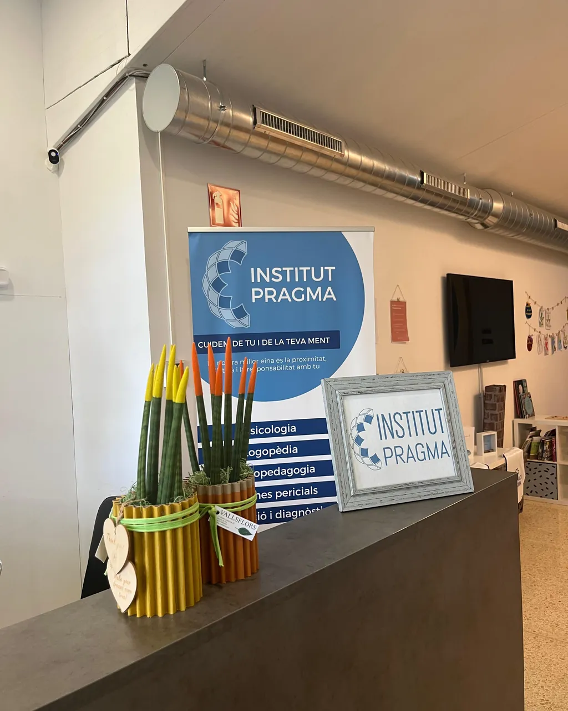
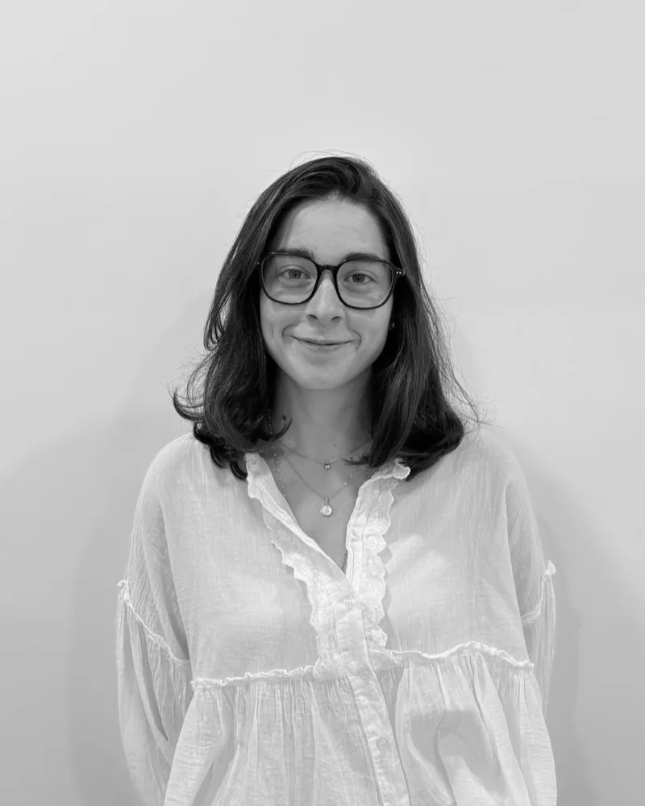
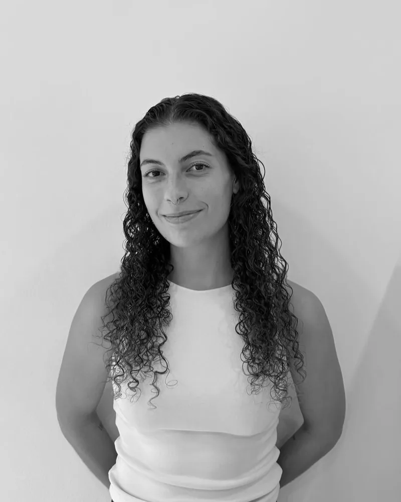

Anna Cantudo
Fundadora, codirectora i logopeda
Pragma Institut
Grup Pragma neix a Molins de Rei fa més de vint anys amb una idea senzilla: que cada persona necessita un acompanyament diferent, i que això funciona millor si les disciplines treballen juntes en comptes de per separat.
Trajectòria
El que va començar com un espai d'atenció psicològica i educativa ha anat creixent fins a esdevenir un grup amb dues bandes complementàries —Pragma Institut i Pragma Clínic— i una unitat pròpia d'avaluació, la UAD.
Al llarg d'aquests anys hem acompanyat infants que ara són adults, hem vist com evolucionaven molts casos i hem teixit una relació de confiança amb les escoles i els serveis del territori.
[PENDENT] — any de fundació exacte, fites destacades i dades de trajectòria per completar amb informació verificada.

Com treballem
Vuit principis que expliquen com funciona el grup per dins.
Cada procés s'ajusta a la persona i al seu moment, no a l'inrevés.
Psicologia, psicopedagogia, logopèdia, psiquiatria i treball social sota un mateix criteri.
Les persones que t'atenen parlen entre elles sobre el teu cas.
La família forma part del procés i del canvi.
Ens comuniquem amb els centres educatius quan ajuda l'infant.
Amb EAP, CSMIJ i altres serveis del territori.
Entre Institut i Clínic quan un cas ho necessita, sense començar de zero.
No tanquem quan marxes: revisem com va evolucionant.
En xifres
Només publiquem dades que podem sostenir. La resta queda marcada com a pendent fins que la confirmem.
anys acompanyant persones i famílies
professionals a l'equip multidisciplinari
disciplines coordinades sota un mateix criteri
Equip
Onze professionals de psicologia, psicopedagogia, logopèdia, psiquiatria i treball social, coordinats sota un mateix criteri.
Anna Cantudo
Fundadora, codirectora i logopeda
Pragma Institut
Ana Domínguez
Codirectora i psicòloga clínica
Pragma Clínic
Maria Carrillo
Psicopedagoga
Pragma Institut

Laia Salas
Pedagoga i treballadora social
Pragma Institut
Maria de Pablo
Psicòloga clínica i teràpia de parella
Pragma Clínic
Laia Pons
Psicòloga i neuropsicòloga
Pragma Clínic
Andrea Martínez
Psicopedagoga
Pragma Institut
Maria Rodríguez
Logopeda
Pragma Institut
Enya Panadero
Psicòloga
Pragma Institut

Anna de Pablos
Psicòloga clínica
Pragma Clínic
José Pérez
Psiquiatre i terapeuta de família
Pragma Clínic
Les titulacions i els números de col·legiació s'aniran completant a cada fitxa. [PENDENT]
Parlem-ne
Expliquem-ho amb calma i mirem què necessiteu.
Demanar hora